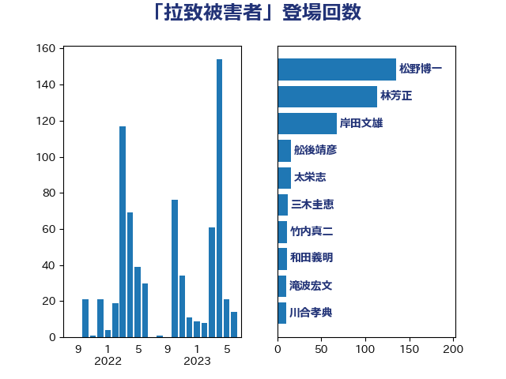

単語「拉致被害者」

| 松野博一 | 自由民主党 | 135 回 |
| 林芳正 | 自由民主党 | 114 回 |
| 岸田文雄 | 自由民主党 | 68 回 |
| 舩後靖彦 | れいわ新選組 | 16 回 |
| 太栄志 | 立憲民主党 | 16 回 |
| 三木圭恵 | 日本維新の会 | 12 回 |
| 竹内真二 | 公明党 | 11 回 |
| 和田義明 | 自由民主党 | 11 回 |
| 滝波宏文 | 自由民主党 | 10 回 |
| 川合孝典 | 国民民主党 | 10 回 |
| 金子道仁 | 日本維新の会 | 9 回 |
| 美延映夫 | 日本維新の会 | 8 回 |
| 松原仁 | 立憲民主党 | 8 回 |
| 笠井亮 | 日本共産党 | 7 回 |
| 東徹 | 日本維新の会 | 7 回 |
| 梅谷守 | 立憲民主党 | 6 回 |
| 宮路拓馬 | 自由民主党 | 6 回 |
| 中川郁子 | 自由民主党 | 6 回 |
| 谷公一 | 自由民主党 | 5 回 |
| 松本剛明 | 自由民主党 | 5 回 |
| 山田賢司 | 自由民主党 | 5 回 |
| 和田有一朗 | 日本維新の会 | 5 回 |
| 丸川珠代 | 自由民主党 | 5 回 |
| 三上えり | 立憲民主党 | 5 回 |
| 馬場伸幸 | 日本維新の会 | 4 回 |
| 長島昭久 | 自由民主党 | 4 回 |
| 金村龍那 | 日本維新の会 | 4 回 |
| 西村智奈美 | 立憲民主党 | 4 回 |
| 浜田聡 | NHK党 | 4 回 |
| 羽田次郎 | 立憲民主党 | 3 回 |
| 細田健一 | 自由民主党 | 3 回 |
| 田中健 | 国民民主党 | 3 回 |
| 清水真人 | 自由民主党 | 3 回 |
| 打越さく良 | 立憲民主党 | 3 回 |
| 中司宏 | 日本維新の会 | 3 回 |
| 高橋英明 | 日本維新の会 | 2 回 |
| 高木啓 | 自由民主党 | 2 回 |
| 高木かおり | 日本維新の会 | 2 回 |
| 鈴木貴子 | 自由民主党 | 2 回 |
| 鈴木敦 | 国民民主党 | 2 回 |
| 赤池誠章 | 自由民主党 | 2 回 |
| 西村康稔 | 自由民主党 | 2 回 |
| 藤田文武 | 日本維新の会 | 2 回 |
| 神谷宗幣 | 参政党 | 2 回 |
| 浜地雅一 | 公明党 | 2 回 |
| 武井俊輔 | 自由民主党 | 2 回 |
| 徳永久志 | 無所属 | 2 回 |
| 小田原潔 | 自由民主党 | 2 回 |
| 小林一大 | 自由民主党 | 2 回 |
| 堀井巌 | 自由民主党 | 2 回 |
| 高良鉄美 | 無所属 | 1 回 |
| 野間健 | 立憲民主党 | 1 回 |
| 近藤和也 | 立憲民主党 | 1 回 |
| 秋本真利 | 無所属 | 1 回 |
| 福山哲郎 | 立憲民主党 | 1 回 |
| 石井苗子 | 日本維新の会 | 1 回 |
| 泉健太 | 立憲民主党 | 1 回 |
| 池下卓 | 日本維新の会 | 1 回 |
| 榛葉賀津也 | 国民民主党 | 1 回 |
| 梅村みずほ | 日本維新の会 | 1 回 |
| 杉尾秀哉 | 立憲民主党 | 1 回 |
| 本田太郎 | 自由民主党 | 1 回 |
| 木原稔 | 自由民主党 | 1 回 |
| 平沼正二郎 | 自由民主党 | 1 回 |
| 山谷えり子 | 自由民主党 | 1 回 |
| 小西洋之 | 立憲民主党 | 1 回 |
| 大塚耕平 | 国民民主党 | 1 回 |
| 倉林明子 | 日本共産党 | 1 回 |
| 井上哲士 | 日本共産党 | 1 回 |
| 亀岡偉民 | 自由民主党 | 1 回 |
| 下条みつ | 立憲民主党 | 1 回 |
| 上杉謙太郎 | 自由民主党 | 1 回 |
| 上川陽子 | 自由民主党 | 1 回 |